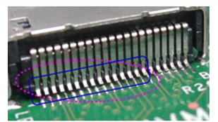

浮高現象是指元件本體未緊貼 PCB 表面，底部與基板有間隙，可能導致機械強度不足或焊點接觸不良。
常見原因包括吸嘴吸力不足、元件卡阻、PCB翹曲、錫膏厚度不均或回焊受熱不均等。
根據 IPC Class 2 標準，若元件雖浮起但焊點良好且具足夠機械強度，可判為 Acceptable；若焊點不良或無法導通，則屬 Defect。
| 類別 | 判定說明 |
|---|---|
| ✅ Target | 元件底部貼合 PCB 表面，無可見間隙 |
| ✔ Acceptable | 元件稍微浮起但焊點充分覆蓋並導通良好 |
| ❌ Defect | 元件懸空或浮起導致焊點不完整或電性不良 |
左：元件貼合無間隙；右：浮起造成底部間隙（需視焊點導通判定）
